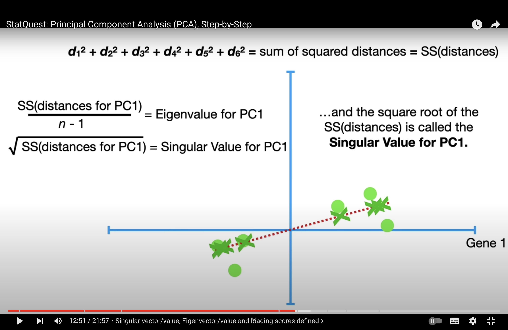

review2#
PCA Cont#
{kind=link}
the reason we centralise data: so that calculating the variance of projected dots on pc is equivalent to calculating the sum of the distance of each dot to the center (0,0) => more interpretable and simplify calculation process.
{kind=link}
singular value decomposition (SVD): to “recover” the point we draw.
Eigenvalue decomposition#
Eigenvalue decomposition is a technique in linear algebra where a matrix is broken down into its constituent parts to make certain operations on the matrix easier to perform. This decomposition is especially useful in the context of covariance matrices when analyzing data.
Let’s go step by step to understand how the eigenvalue decomposition of a covariance matrix works and why it’s useful.
Covariance Matrix#
Firstly, the covariance matrix is a square matrix that summarizes the covariance (a measure of how much two variables change together) between each pair of elements in a data set. If you have a data set with \( n \) dimensions, the covariance matrix will be \( n \times n \).
Eigenvalues and Eigenvectors#
An eigenvector of a square matrix \( A \) is a non-zero vector \( v \) such that when \( A \) is multiplied by \( v \), the product is a scalar multiple of \( v \). That scalar is known as an eigenvalue. Mathematically, this is represented as:
where \( A \) is the matrix, \( v \) is the eigenvector, and \( \lambda \) is the eigenvalue.
Decomposition of a Covariance Matrix#
When you decompose a covariance matrix \( \Sigma \), you find its eigenvalues and eigenvectors. This decomposition has the form:
where \( \Sigma \) is the covariance matrix, \( Q \) is the matrix composed of the eigenvectors of \( \Sigma \), \( \Lambda \) is the diagonal matrix with the eigenvalues of \( \Sigma \) on the diagonal, and \( Q^{-1} \) is the inverse of the matrix \( Q \).
Why Decompose a Covariance Matrix?#
Decomposing a covariance matrix is useful for several reasons:
Principal Component Analysis (PCA): PCA is a technique to reduce the dimensionality of data. It identifies the directions (principal components) in which the data varies the most. In PCA, the eigenvectors (principal components) of the covariance matrix provide the directions of maximum variance, and the eigenvalues indicate the magnitude of that variance.
Efficiency: Once decomposed, certain operations such as matrix inversion or determining the matrix rank become much easier and more computationally efficient.
Understanding Data: By examining the eigenvalues and eigenvectors, one can understand the shape and distribution of the data. Large eigenvalues correspond to dimensions with large variance, indicating that the data spreads out widely in the direction of the corresponding eigenvector.
Would you like to see a numerical example of how to perform eigenvalue decomposition on a covariance matrix?
How OLS changed#
In the context of regression analysis, the ordinary least squares (OLS) estimator for the regression coefficients, often denoted as \( \beta \), is calculated to minimize the sum of the squared differences between the observed responses and the responses predicted by the linear model. This is applicable in both standard linear regression and Principal Component Regression (PCR), but with a key difference in how the variables are treated.
Ordinary Least Squares (OLS)#
For standard linear regression, the least squares estimate of \( \beta \) is given by the formula:
where:
\( X \) is the matrix of input features,
\( Y \) is the vector of observed responses,
\( X^\top \) is the transpose of \( X \),
\( (X^\top X)^{-1} \) is the inverse of \( X^\top X \) (assuming it is invertible),
\( \hat{\beta}_{OLS} \) is the estimated vector of coefficients.
This estimator minimizes the sum of squared residuals:
Principal Component Regression (PCR)#
In PCR, before you perform regression, you first reduce the dimensionality of \( X \) by selecting a few principal components. Let’s denote the matrix of selected principal components as \( P \). Then the PCR estimate of \( \beta \) is given by:
Here, the principal component scores matrix \( P \) replaces the original feature matrix \( X \). After estimating the coefficients \( \hat{\beta}_{PCR} \), you can transform them back to the original space of \( X \) if needed.
So, while the form of the least squares estimation equation remains similar (it’s always about finding the coefficients that minimize the sum of squared residuals), in PCR, the equation is applied to the principal components of \( X \), not \( X \) itself. This can lead to a more stable estimate in cases where the original predictors are highly collinear.
Limitation of PCR#
Principal Component Regression (PCR) involves a trade-off between bias and variance, which is a fundamental concept in statistical learning. The limitation of PCR comes from this trade-off, and understanding it requires a look at the underlying concepts:
Bias-Variance Trade-off#
Bias refers to the error introduced by approximating a real-world problem, which may be complex, by a much simpler model. In the context of PCR, using a limited number of principal components means that you are ignoring some information contained in the data, which introduces bias.
Variance refers to the error due to the variability of the model prediction if we use different subsets of the data. A model with high variance pays a lot of attention to training data and does not generalize well on unseen data.
Limitations of PCR#
Information Loss: PCR reduces the dimensionality of the feature space by using a subset of all the principal components, which means it may discard components that contain useful information about the response variable.
Selection of Components: Choosing the number of principal components to keep in the model is not always straightforward. Keeping too many components may not sufficiently reduce variance, while keeping too few may introduce significant bias.
Interpretability: The principal components are linear combinations of the original variables and may not have a meaningful interpretation. This can make it difficult to understand the model, especially in fields where interpretability is crucial.
Assumption of Linearity: PCR assumes that the relationship between the principal components and the response variable is linear. If the true relationship is non-linear, PCR may not provide an adequate model.
Sensitive to Scaling: PCR is sensitive to the scaling of the variables. If the variables are on different scales, the principal components may be dominated by the variables with larger scales.
Why Variance is Traded Off Against Bias#
PCR trades variance for bias to create a more robust model that generalizes better to new data. By reducing the dimensionality:
It may reduce overfitting: A high-dimensional dataset can lead to a model that fits the noise in the training set rather than the underlying relationship, which is high variance.
It can improve model performance: By reducing the number of predictors, you often reduce the complexity of the model, which can lead to better performance on new, unseen data, despite introducing some bias.
In summary, the limitation of PCR is that while it can lead to a model with lower variance, it may introduce bias into the estimation process. The trade-off is beneficial when the reduction in variance leads to improved model performance on unseen data, despite the loss of some information due to bias.
Difference Between PCR and PLS#
Partial Least Squares (PLS) regression and Principal Component Regression (PCR) are both methods that combine features of principal component analysis (PCA) with regression. They are typically used when the predictor variables are highly collinear or when there are more predictor variables than observations. Despite their similarities, PLS and PCR have distinct differences in terms of methodology and objectives.
Principal Component Regression (PCR):#
Dimensionality Reduction: PCR is a two-step process where PCA is first performed on the predictor variables to reduce the dimensionality of the problem and to identify a few orthogonal principal components (PCs).
Regression: The second step involves performing linear regression on these selected principal components rather than the original predictor variables.
Variance: PCR focuses on capturing the variance in the predictor variables without considering the response variable. This might lead to selecting components that explain a lot of the variance in the predictors but have little to do with the response variable.
Indirect Maximization of Covariance: Although PCR uses principal components that maximize the variance in the predictors, it does not directly maximize the covariance between the predictors and the response.
Partial Least Squares (PLS) Regression:#
Covariance-based Dimensionality Reduction: PLS, like PCR, is also about reducing the dimensionality of the predictor variables. However, PLS does this by identifying new features (latent variables) that perform a simultaneous decomposition of the predictors and the response variable, with the goal of maximizing the covariance between the response and predictors.
Integrated Approach: PLS integrates the dimensionality reduction and the regression steps into a single model, which means that it considers the response variable while identifying the new latent variables.
Response Variance: PLS specifically tries to identify components that are relevant for predicting the response variable. This makes PLS more suitable for predictive modeling when the goal is to improve prediction accuracy.
Direct Maximization of Covariance: PLS components are chosen to maximize the covariance between the predictors and the response, which often leads to models that are better at prediction.
Use Cases:#
PCR is often preferred when the primary interest is in understanding the underlying structure of the data or when the components that capture the most variance in the predictors are also expected to be related to the response.
PLS is typically used when the goal is predictive modeling, and there’s a need to find the latent structures that most affect the response variable, especially when the predictor variables are numerous and highly collinear.
In summary, the choice between PCR and PLS depends on the goals of the analysis. If the main interest is in prediction and the predictors are highly collinear, PLS is usually the preferred method. If the goal is dimensionality reduction or if the principal components that capture the most variance are believed to be the most relevant for the response, PCR may be used.
Yes, in the context of Partial Least Squares (PLS) regression, the goal is to find components that explain the maximum possible variance in the predictors while also having the highest possible covariance with the response variable. This is distinct from methods like Principal Component Analysis (PCA) and Principal Component Regression (PCR), where the components are chosen solely based on the variance within the predictor variables, without considering the relationship between predictors and the response.
Here’s a bit more detail on how PLS works with respect to maximizing covariance:
Projection: PLS projects both the predictor variables (X) and the response variable (Y) onto a new space. The projections are chosen such that the covariance between the projected X (scores) and projected Y is maximized.
Covariance: In statistics, covariance is a measure of the joint variability of two random variables. If you have a set of predictors \( X \) and a response \( Y \), their covariance is a measure of how much the variables change together. PLS tries to find the linear combinations of the predictor variables that covary the most with the response.
Latent Variables: The new components (latent variables) in PLS are constructed as linear combinations of the original predictors. These latent variables are chosen iteratively, where each new latent variable is chosen to maximize the residual covariance between \( X \) and \( Y \) that is not explained by the previous latent variables.
Regression: After finding these new components, PLS performs regression on them to predict the response variable. Since these components are designed to have a high covariance with the response, the resulting regression model is often more predictive than one that does not consider the relationship between \( X \) and \( Y \) when reducing dimensionality, like PCR.
The advantage of maximizing covariance is that PLS tends to find features that are not just explanatory for \( X \) but also predictive of \( Y \), which makes it particularly useful in situations where prediction is the goal and the predictor variables have multicollinearity. This is in contrast to PCR, where the components are selected only based on how well they capture the variance in \( X \), which may not always lead to the best predictive performance when it comes to \( Y \).